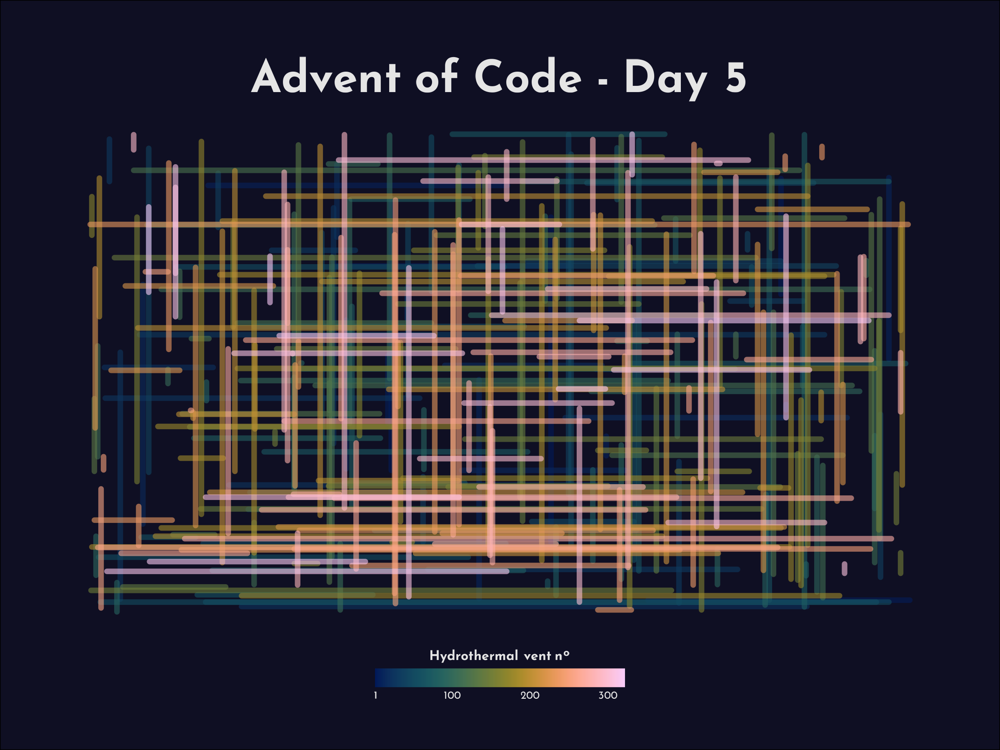

My 2021 Attempts
Day 1
Part 1
library(tidyverse)
data <- read_table("./2021/day_01/input_day01.txt", col_names = "depth")
data %>%
mutate(depth_lag = lag(depth),
diff = depth - depth_lag,
diff_bin = diff / abs(diff)) %>%
count(diff_bin)
data %>%
mutate(depth_lag = lag(depth),
diff = depth - depth_lag,
diff_bin = diff / abs(diff),
diff_bin_label = case_when(diff_bin == -1 ~ "Smaller than last",
diff_bin == 1 ~ "Larger than last",
TRUE ~ "No measurement/no difference")) %>%
count(diff_bin_label) %>%
filter(str_detect(diff_bin_label, "Larger")) %>%
pull(n) %>%
print()[1] 13900.147 sec elapsedPart 2
library(tidyverse)
data <- read_table("./2021/day_01/input_day01.txt", col_names = "depth")
data %>%
slider::slide(., ~.x, .after = 2, .f = ~sum(.x)) %>%
enframe(name = "window_no", value = "depth") %>%
unnest(depth) %>%
mutate(depth_lag = lag(depth),
diff = depth - depth_lag,
diff_bin = diff / abs(diff),
diff_bin_label = case_when(diff_bin == -1 ~ "Smaller than last",
diff_bin == 1 ~ "Larger than last",
TRUE ~ "No measurement/no difference")) %>%
count(diff_bin_label) %>%
filter(str_detect(diff_bin_label, "Larger")) %>%
pull(n) %>%
print()[1] 14570.231 sec elapsedDay 2
Part 1
library(tidyverse)
commands <- read_table("./2021/day_02/input_day02.txt",
col_names = c("direction","value"))
final_position <- commands %>%
mutate(value_bin = case_when(direction == "up" ~ value * -1,
TRUE ~ value),
direction_bin = case_when(direction == "forward" ~ "x",
TRUE ~ "y")) %>%
group_by(direction_bin) %>%
summarise(pos = sum(value_bin)) %>%
ungroup()
final_position %>%
summarise(mult = prod(pos)) %>%
pull(mult) %>%
print()[1] 16547600.036 sec elapsedPart 2
library(tidyverse)
commands <- read_table("./2021/day_02/input_day02.txt",
col_names = c("direction","value"))
aim <- depth <- 0
for (i in seq(nrow(commands))) {
t_direction <- commands %>%
slice(i) %>%
pull(direction)
t_value <- commands %>%
slice(i) %>%
pull(value)
if (t_direction == "forward") {
depth <- depth + (aim * t_value)
} else if (t_direction == "down") {
aim <- aim + t_value
} else if (t_direction == "up") {
aim <- aim - t_value
}
}
final_position %>%
filter(direction_bin == "x") %>%
pull(pos) %>%
prod(., depth) %>%
print()[1] 19560474003.172 sec elapsedDay 3
Part 1
library(tidyverse)
input <- read_table("./2021/day_03/input_day03.txt", col_names = "full_binary")
n_bits <- input %>%
pull(full_binary) %>%
nchar() %>%
unique()
input_conv <- input %>%
separate(full_binary, into = str_glue("bit{seq(0,n_bits)}"), sep = "") %>%
select(-bit0) %>%
pivot_longer(starts_with("bit"), names_to = "bit_no") %>%
mutate(value = as.numeric(value),
bit_no = parse_number(bit_no)) %>%
group_by(bit_no) %>%
count(value)
gamma_rate <- input_conv %>%
slice_max(n) %>%
pull(value) %>%
str_c(collapse = "")
gamma_rate_dec <- strtoi(gamma_rate, base = 2)
epsilon_rate <- input_conv %>%
slice_min(n) %>%
pull(value) %>%
str_c(collapse = "")
epsilon_rate_dec <- strtoi(epsilon_rate, base = 2)
print(gamma_rate_dec * epsilon_rate_dec)[1] 31487940.097 sec elapsedPart 2
library(tidyverse)
input <- read_table("./2021/day_03/input_day03.txt", col_names = "full_binary")
input_conv_wide <- input %>%
separate(full_binary, into = str_glue("bit{seq(0,n_bits)}"), sep = "") %>%
select(-bit0) %>%
mutate(across(everything(), ~ as.numeric(.x)))
apply_rule <- function(df, iteration, minmax = "max") {
most_common <- df %>%
select(all_of(iteration)) %>%
group_by(across(everything())) %>%
count() %>%
ungroup()
if (minmax == "max") {
most_common <- most_common %>%
slice_max(n) %>%
pull(1)
} else {
most_common <- most_common %>%
slice_min(n) %>%
pull(1)
}
if (length(most_common) > 1) {
most_common <- ifelse(minmax == "max", 1, 0)
}
df <- df %>%
filter(across(iteration, ~ .x == most_common))
return(df)
}
oxygen_rating <- reduce(seq(n_bits), ~ apply_rule(.x, .y, minmax = "max"),
.init = input_conv_wide) %>%
as.numeric() %>%
str_c(collapse = "") %>%
strtoi(base = 2)
co2_rating <- reduce(seq(n_bits), ~ apply_rule(.x, .y, minmax = "min"),
.init = input_conv_wide) %>%
as.numeric() %>%
str_c(collapse = "") %>%
strtoi(base = 2)
print(oxygen_rating * co2_rating)[1] 27953101.448 sec elapsedDay 4
Part 1
library(tidyverse)
input_numbers <- read_csv("./2021/day_04/input_day04.txt", col_names = FALSE) %>%
slice(1) %>%
mutate(across(everything(), ~ as.numeric(.x))) %>%
as_vector()
boards <- read_table("./2021/day_04/input_day04.txt", skip = 2,
col_names = FALSE, skip_empty_rows = TRUE) %>%
rename_with(~ str_glue("col{parse_number(.x)}")) %>%
group_by(board_no = ceiling(row_number()/5)) %>%
rownames_to_column("row_no")
n_boards <- boards %>%
ungroup() %>%
slice_max(board_no) %>%
pull(board_no) %>%
unique()
boards_long <- boards %>%
pivot_longer(starts_with("col"), names_to = "col_no", values_to = "number") %>%
mutate(col_no = parse_number(col_no)) %>%
relocate(board_no, .after = last_col())
run_numbers <- function(df, in_number, n_boards = NULL) {
if (any(str_detect(names(df),"final_number"))) {
return(df)
stop()
}
board_filt <- df %>%
filter(number != in_number)
n_unique_rows <- board_filt %>%
count(row_no) %>%
count(board_no) %>%
pull(n)
n_unique_cols <- board_filt %>%
count(col_no) %>%
count(board_no) %>%
pull(n)
#print(in_number)
if (sum(n_unique_rows * n_unique_cols) < n_boards * 5 * 5) {
board_filt <- df %>%
mutate(final_number = in_number)
return(board_filt)
} else {
return(board_filt)
}
}
bingo_game <- reduce(input_numbers, ~ run_numbers(.x, .y, n_boards = n_boards),
.init = boards_long)
winning_board <- bingo_game %>%
filter(number != final_number) %>%
summarise(nrow = length(unique(row_no)),
ncol = length(unique(col_no))) %>%
filter(nrow * ncol < 25) %>%
pull(board_no)
bingo_game %>%
ungroup() %>%
filter(number != final_number,
board_no == winning_board) %>%
summarise(sum_unmarked = sum(number),
final_number = unique(final_number)) %>%
as_vector() %>%
prod() %>%
print()[1] 634241.775 sec elapsedPart 2
library(tidyverse)
input_numbers <- read_csv("./2021/day_04/input_day04.txt", col_names = FALSE) %>%
slice(1) %>%
mutate(across(everything(), ~ as.numeric(.x))) %>%
as_vector()
boards <- read_table("./2021/day_04/input_day04.txt", skip = 2,
col_names = FALSE, skip_empty_rows = TRUE) %>%
rename_with(~ str_glue("col{parse_number(.x)}")) %>%
group_by(board_no = ceiling(row_number()/5)) %>%
rownames_to_column("row_no")
n_boards <- boards %>%
ungroup() %>%
slice_max(board_no) %>%
pull(board_no) %>%
unique()
boards_long <- boards %>%
pivot_longer(starts_with("col"), names_to = "col_no", values_to = "number") %>%
mutate(col_no = parse_number(col_no)) %>%
relocate(board_no, .after = last_col())
run_numbers <- function(df, in_number, n_boards = NULL) {
if (any(str_detect(names(df),"final_number"))) {
return(df)
stop()
}
board_filt <- df %>%
filter(number != in_number)
n_unique_rows <- board_filt %>%
count(row_no) %>%
count(board_no) %>%
pull(n)
n_unique_cols <- board_filt %>%
count(col_no) %>%
count(board_no) %>%
pull(n)
if (all(n_unique_rows * n_unique_cols < 5 * 4 + 1)) {
board_filt <- df %>%
mutate(final_number = in_number)
return(board_filt)
} else {
return(board_filt)
}
}
bingo_game <- reduce(input_numbers, ~ run_numbers(.x, .y, n_boards = n_boards),
.init = boards_long)
losing_board <- bingo_game %>%
summarise(nrow = length(unique(row_no)),
ncol = length(unique(col_no))) %>%
filter(nrow * ncol == 5 * 5) %>%
pull(board_no)
bingo_game %>%
ungroup() %>%
filter(number != final_number,
board_no == losing_board) %>%
summarise(sum_unmarked = sum(number),
final_number = unique(final_number)) %>%
as_vector() %>%
prod() %>%
print()[1] 235414.631 sec elapsedDay 5
Part 1
library(tidyverse)
library(showtext)
input <- read_csv(here::here("2021", "day_05","input_day05.txt"),
col_names = FALSE) %>%
rename(x1 = X1,
y2 = X3) %>%
separate(X2, into = c("y1","x2")) %>%
mutate(across(everything(), ~ as.numeric(.x)))
font_add_google("Josefin Sans", family = "google")
showtext_auto()
input %>%
filter(x1 == x2 | y1 == y2) %>%
rowid_to_column("segment_no") %>%
mutate(x_steps = map2(x1, x2, .f = seq),
y_steps = map2(y1, y2, .f = seq)) %>%
select(segment_no, x_steps, y_steps) %>%
unnest(c(x_steps, y_steps)) %>%
count(x_steps, y_steps) %>%
count(overlapping_segments = n > 1) %>%
filter(overlapping_segments) %>%
pull(n) %>%
print()
input %>%
filter(x1 == x2 | y1 == y2) %>%
rowid_to_column("segment_no") %>%
ggplot() +
geom_segment(aes(x = x1, y = y1, xend = x2, yend = y2, color = segment_no),
size = 1.5, alpha = 0.6, lineend = "round") +
labs(title = "**Advent of Code - Day 5**",
color = "**Hydrothermal vent n<sup>o</sup>**") +
scico::scale_color_scico(palette = "batlow", breaks = c(1,seq(100,nrow(input), 100)),
guide = guide_colorbar(title.position = "top", title.hjust = 0.5,
barwidth = 10, barheight = 0.75, ticks = FALSE)) +
scale_y_reverse() +
theme_void(base_size = 24) +
theme(text = element_text(family = "google", color = "grey90"),
plot.title = ggtext::element_markdown(hjust = 0.5, size = 80,
margin = margin(rep(5,4), unit = "pt")),
legend.title = ggtext::element_markdown(margin = margin(b = -10, unit = "pt")),
legend.text = element_text(margin = margin(t = -10, "pt")),
legend.position = "bottom",
plot.margin = margin(rep(10,4), unit = "mm"),
plot.background = element_rect(fill = "#0f0f23"))
ggsave(here::here("2021", "day_05", "plot_day05.png"), last_plot(),
height = 6, width = 8, dpi = 300)[1] 65724.471 sec elapsed
Part 2
library(tidyverse)
library(showtext)
input <- read_csv(here::here("2021", "day_05","input_day05.txt"),
col_names = FALSE) %>%
rename(x1 = X1,
y2 = X3) %>%
separate(X2, into = c("y1","x2")) %>%
mutate(across(everything(), ~ as.numeric(.x)))
font_add_google("Josefin Sans", family = "google")
showtext_auto()
input %>%
rowid_to_column("segment_no") %>%
mutate(x_steps = map2(x1, x2, .f = seq),
y_steps = map2(y1, y2, .f = seq)) %>%
select(segment_no, x_steps, y_steps) %>%
unnest(c(x_steps, y_steps)) %>%
count(x_steps, y_steps) %>%
count(overlapping_segments = n > 1) %>%
filter(overlapping_segments) %>%
pull(n) %>%
print()[1] 214662.559 sec elapsedDay 6
Part 1
library(tidyverse)
input <- read_csv(here::here("2021", "day_06","input_day06.txt"),
col_names = FALSE) %>%
unname() %>%
as_vector()
n_days <- 80
gen_fish <- function(x, day) {
n_new <- sum(x == 0)
new_fish <- rep(8,n_new)
old_fish_repl <- replace(x - 1, x - 1 < 0, 6)
new_fish_vector = c(old_fish_repl, new_fish)
n_fish <- length(new_fish_vector)
#print(str_glue("Day {day}: {n_fish} fish"))
return(new_fish_vector)
}
final_fish_vector <- reduce(seq(n_days), ~ gen_fish(.x, .y), .init = input)
print(length(final_fish_vector))[1] 3866400.59 sec elapsedPart 2
library(tidyverse)
input <- read_csv(here::here("2021", "day_06","input_day06.txt"),
col_names = FALSE) %>%
unname() %>%
as_vector()
data <- tabulate(input, nbins = 8) %>%
c(0, .) %>%
as_tibble() %>%
rename(n = value) %>%
mutate(value = row_number() - 1) %>%
relocate(value, .before = 1)
get_fish_count <- function(x) {
data_out <- x %>%
select(-n) %>%
full_join(x %>% mutate(value = value - 1), by = "value") %>%
mutate(n = replace_na(n, 0))
data_out$n[data_out$value == 6] <- data_out %>%
filter(value %in% c(-1,6)) %>%
pull(n) %>%
sum()
data_out$n[data_out$value == 8] <- data_out %>%
filter(value == -1) %>%
pull(n)
data_out <- data_out %>% filter(value >= 0)
return(data_out)
}
final_fish_count <- reduce(seq(256), ~ get_fish_count(.x), .init = data)
options(scipen = 999)
final_fish_count %>%
summarise(total_fish = sum(n)) %>%
pull(total_fish) %>%
print()[1] 17334036262793.129 sec elapsedDay 7
Part 1
library(tidyverse)
input <- read_csv(here::here("2021","day_07","input_day07.txt"),
col_names = FALSE) %>%
unname() %>%
as_vector()
calc_fuel <- function(x, pos) {
fuel <- tibble(
position = pos,
consumption = sum(abs(input - pos))
)
return(fuel)
}
fuel <- map_dfr(seq(0, max(input)), ~ calc_fuel(input, .x))
fuel %>%
slice_min(consumption) %>%
pull(consumption) %>%
print()[1] 3281871.613 sec elapsedPart 2
library(tidyverse)
input <- read_csv(here::here("2021","day_07","input_day07.txt"),
col_names = FALSE) %>%
unname() %>%
as_vector()
calc_fuel <- function(x, pos) {
consumption <- abs(input - pos) %>%
map_dbl(., ~ sum(seq(.x)))
fuel <- tibble(
position = pos,
consumption = sum(consumption)
)
return(fuel)
}
fuel <- map_dfr(seq(0, max(input)), ~ calc_fuel(input, .x))
fuel %>%
slice_min(consumption) %>%
pull(consumption) %>%
print()[1] 9125758215.955 sec elapsedDay 8
Part 1
library(tidyverse)
input <- read_delim(here::here("2021","day_08","input_day08.txt"), delim = "|",
col_names = FALSE)
numbers <- c("1" = 2, "4" = 4, "7" = 3, "8" = 7)
input %>%
select(output = X2) %>%
mutate(output = str_trim(output)) %>%
separate(output, into = str_glue("digit{seq(4)}")) %>%
mutate(across(everything(), ~ nchar(.x))) %>%
pivot_longer(cols = everything(), names_to = "digit",
values_to = "n_segments") %>%
filter(n_segments %in% numbers) %>%
nrow() %>%
print()[1] 2940.072 sec elapsedPart 2
Got a lot of help from Emil Hvitveldt on this one. Reorganized his solution so I could make sense of it. This one hurt me
library(tidyverse)
input <- read_delim(here::here("2021","day_08","input_day08.txt"), delim = "|",
col_names = FALSE)
split_segments <- function(x) {
x %>%
str_split(., " ") %>%
map(., ~ str_split(.x, pattern = "")) %>%
map(., ~ map(.x, ~ sort(.x)))
}
data <- input %>%
rename(input = X1,
output = X2) %>%
mutate(across(everything(), ~ str_trim(.x))) %>%
mutate(across(c("input", "output"), split_segments))
solver <- function(input, output) {
setdiff_length <- function(x, y) {
lengths(map(x, ~setdiff(x[[which(y)]], .x)))
}
x1 <- lengths(input) == 2
x4 <- lengths(input) == 4
x7 <- lengths(input) == 3
x8 <- lengths(input) == 7
x6 <- lengths(input) == 6 & setdiff_length(input, x1) == 1
x0 <- lengths(input) == 6 & setdiff_length(input, x4) == 1 & !x6
x9 <- lengths(input) == 6 & !x6 & !x0
x5 <- lengths(input) == 5 & setdiff_length(input, x6) == 1
x3 <- lengths(input) == 5 & setdiff_length(input, x9) == 1 & !x5
x2 <- lengths(input) == 5 & !x5 & !x3
cont <- list(x0, x1, x2, x3, x4, x5, x6, x7, x8, x9) %>%
map(~ input[[which(.x)]]) %>%
map(sort)
output %>%
match(cont) %>%
magrittr::subtract(., 1) %>%
str_c(collapse = "") %>%
as.numeric()
}
data %>%
mutate(res = map2_dbl(input, output, ~ solver(.x, .y))) %>%
summarise(sum = sum(res)) %>%
pull(sum) %>%
print()[1] 9732920.492 sec elapsedDay 9
Part 1
library(tidyverse)
input <- read_table(here::here("2021","day_09","input_day09.txt"),
col_names = FALSE) %>%
rename(value = X1)
full_table <- input %>%
separate(value, into = str_glue("coord{seq(0,10)}"), sep = "") %>%
mutate(across(everything(), ~ as.numeric(.x))) %>%
rowid_to_column("row_no") %>%
add_row(tibble(row_no = c(0, nrow(.) + 1))) %>%
mutate(across(everything(), ~ replace_na(.x, Inf)),
coord_last = Inf) %>%
arrange(row_no)
row_wise_table <- full_table %>%
pivot_longer(starts_with("coord"), names_to = "column_no") %>%
group_by(column_no) %>%
mutate(lag_value = lag(value),
lead_value = lead(value),
low_point_row = ifelse(value < lag_value & value < lead_value,
yes = TRUE, no = FALSE)) %>%
select(row_no, column_no, value, low_point_row)
col_wise_table <- full_table %>%
pivot_longer(starts_with("coord"), names_to = "column_no") %>%
group_by(row_no) %>%
mutate(lag_value = lag(value),
lead_value = lead(value),
low_point_col = ifelse(value < lag_value & value < lead_value,
yes = TRUE, no = FALSE)) %>%
select(row_no, column_no, value, low_point_col)
inner_join(col_wise_table, row_wise_table) %>%
filter(low_point_col, low_point_row) %>%
ungroup() %>%
mutate(value = value + 1) %>%
summarise(sum = sum(value)) %>%
pull(sum) %>%
print()[1] 1280.185 sec elapsedPart 2
Got stuck here, and once I found this amazingly clever solution from Ildik Czeller using {igraph}. I wanted to know how this worked, and then I learned from Jarosaw Nirski about a similar solution using {tidygraph}, which is very neat:
library(tidyverse)
input <- read_table(here::here("2021","day_09","input_day09.txt"),
col_names = FALSE) %>%
rename(value = X1)
data_long <- input %>%
rowid_to_column("row_no") %>%
separate_rows(value, sep = "", convert = TRUE) %>%
filter(!is.na(value)) %>%
group_by(row_no) %>%
mutate(col_no = row_number()) %>%
ungroup() %>%
select(value, row_no, col_no)
tidygraph::create_lattice(c(100, 100)) %>%
mutate(!!!data_long) %>%
filter(value != 9) %>%
mutate(group = tidygraph::group_components()) %>%
as_tibble() %>%
count(group, sort = TRUE) %>%
head(3) %>%
pull(n) %>%
prod()0.212 sec elapsedDay 10
Part 1
library(tidyverse)
input <- read_table(here::here("2021","day_10","input_day10.txt"),
col_names = "syntax")
full_patterns <- c("\\(\\)","\\[\\]","\\{\\}","\\<\\>")
symbols <- tibble(symbols = c("(","[","{","<",")","]","}",">"),
valid = c(rep(TRUE, 4), rep(FALSE, 4)))
points <- c(")" = 3, "]" = 57, "}" = 1197, ">" = 25137) %>%
enframe()
input %>%
mutate(nchar = max(nchar(syntax))) %>%
mutate(syntax = reduce(seq(nchar), .init = syntax,
~ str_remove_all(.x, str_c(full_patterns,
collapse = "|")))) %>%
mutate(symbols = str_split(syntax, "")) %>%
unnest(symbols) %>%
group_by(syntax) %>%
mutate(position = row_number()) %>%
left_join(symbols) %>%
filter(!valid) %>%
slice_min(position) %>%
ungroup() %>%
left_join(points, by = c("symbols" = "name")) %>%
summarise(total = sum(value)) %>%
pull(total) %>%
print()[1] 3212370.117 sec elapsedPart 2
library(tidyverse)
input <- read_table(here::here("2021","day_10","input_day10.txt"),
col_names = "syntax")
full_patterns <- c("\\(\\)","\\[\\]","\\{\\}","\\<\\>")
symbols <- tibble(symbols = c("(","[","{","<",")","]","}",">"),
valid = c(rep(TRUE, 4), rep(FALSE, 4)))
points <- c(")" = 1, "]" = 2, "}" = 3, ">" = 4) %>%
enframe()
full_patterns <- c("\\(\\)","\\[\\]","\\{\\}","\\<\\>")
pairs <- tibble(open = c("(","[","{","<"),
close = c(")","]","}",">"))
calc_score <- function(scores) {
tot_score <- reduce(seq_along(scores), ~ .x * 5 + scores[.y], .init = 0)
return(tot_score)
}
input %>%
mutate(nchar = max(nchar(syntax))) %>%
mutate(syntax = reduce(seq(nchar), .init = syntax,
~ str_remove_all(.x, str_c(full_patterns,
collapse = "|")))) %>%
mutate(symbols = str_split(syntax, "")) %>%
unnest(symbols) %>%
group_by(syntax) %>%
left_join(symbols) %>%
filter(all(valid)) %>%
mutate(inv_symbols = rev(symbols)) %>%
left_join(pairs, by = c("inv_symbols" = "open")) %>%
mutate(close_syntax = str_c(close, collapse = "")) %>%
left_join(points, by = c("close" = "name")) %>%
select(syntax,value) %>%
nest(scores = value) %>%
mutate(scores = map(scores, ~ as_vector(.x)),
tot_score = map_dbl(scores, ~ calc_score(.x))) %>%
ungroup() %>%
summarise(median_score = median(tot_score)) %>%
pull(median_score) %>%
print()[1] 23600308590.329 sec elapsedDay 11
Nope, not a chance
Day 12
No idea, sorry!
Day 13
Part 1
library(tidyverse)
input_paper <- read_csv(here::here("2021","day_13","input_day13.txt"),
col_names = c("x","y"), n_max = 1004)
input_folds <- read_delim(here::here("2021","day_13","input_day13.txt"),
delim = "=",
col_names = c("fold_direction", "fold_loc"),
skip = 1005) %>%
mutate(fold_direction = str_extract(fold_direction, "[x|y]"))
fold_paper <- function(df, instructions, step = 1) {
dir <- instructions %>%
slice(step) %>%
pull(fold_direction)
loc <- instructions %>%
slice(step) %>%
pull(fold_loc)
folded_paper <- df %>%
mutate(x = if_else(x <= loc | dir == "y", x, 2 * loc - x),
y = if_else(y <= loc | dir == "x", y, 2 * loc - y)) %>%
distinct(x, y)
return(folded_paper)
}
fold_paper(input_paper, input_folds) %>%
count() %>%
pull(n) %>%
print()[1] 8470.117 sec elapsedPart 2
library(tidyverse)
input_paper <- read_csv(here::here("2021","day_13","input_day13.txt"),
col_names = c("x","y"), n_max = 1004)
input_folds <- read_delim(here::here("2021","day_13","input_day13.txt"),
delim = "=",
col_names = c("fold_direction", "fold_loc"),
skip = 1005) %>%
mutate(fold_direction = str_extract(fold_direction, "[x|y]"))
fold_paper <- function(df, instructions, step = 1) {
dir <- instructions %>%
slice(step) %>%
pull(fold_direction)
loc <- instructions %>%
slice(step) %>%
pull(fold_loc)
folded_paper <- df %>%
mutate(x = if_else(x <= loc | dir == "y", x, 2 * loc - x),
y = if_else(y <= loc | dir == "x", y, 2 * loc - y)) %>%
distinct(x, y)
return(folded_paper)
}
reduce(seq(nrow(input_folds)), ~ fold_paper(.x, input_folds, step = .y),
.init = input_paper) %>%
mutate(dot = "#") %>%
ggplot(aes(x = x, y = y)) +
geom_tile(fill = "#f2f2f2") +
geom_text(aes(label = dot), color = "#b3b3b3", size = 8) +
scale_y_reverse() +
coord_equal() +
theme_void() +
theme(plot.margin = margin(rep(10,4), unit = "mm"),
plot.background = element_rect(fill = "#0f0f23"))
ggsave(here::here("2021", "day_13", "plot_day13_pt2.png"), last_plot(),
height = 3, width = 8, dpi = 300)0.443 sec elapsed
Day 14
Part 1
With some help once again from Ildik Czeller !
library(tidyverse)
input_sequence <- read_lines(here::here("2021","day_14","input_day14.txt"),
n_max = 1)
input_rules <- read_delim(here::here("2021","day_14","input_day14.txt"),
delim = "->", skip = 2,
col_names = c("pair","insert")) %>%
mutate(across(everything(), ~ str_trim(.x)))
rules <- input_rules %>%
mutate(pair_chars = str_split(pair, "")) %>%
unnest_wider(pair_chars, names_sep = "") %>%
mutate(new_pair1 = str_glue("{pair_chars1}{insert}"),
new_pair2 = str_glue("{insert}{pair_chars2}")) %>%
rowwise() %>%
mutate(new_pair = list(c(new_pair1, new_pair2))) %>%
select(pair, new_pair) %>%
ungroup()
pairs_from_string <- function(string) {
ind_chars <- str_split(string, "") %>%
unlist()
pairs <- head(str_glue("{ind_chars}{lead(ind_chars)}"), -1)
return(pairs)
}
initial_pair_frequencies <- input_sequence %>%
pairs_from_string() %>%
as_tibble() %>%
rename(pair = value) %>%
count(pair, name = "freq")
apply_rules <- function(df) {
out <- df %>%
inner_join(rules, by = "pair") %>%
unnest_longer(new_pair) %>%
group_by(new_pair) %>%
summarize(freq = sum(freq)) %>%
rename(pair = new_pair)
return(out)
}
reduce(seq(10), ~ apply_rules(.x), .init = initial_pair_frequencies) %>%
separate_rows(pair, sep = "") %>%
filter(pair != "") %>%
group_by(pair) %>%
summarise(freq = ceiling(sum(freq) / 2)) %>%
ungroup() %>%
summarise(diff = max(freq) - min(freq)) %>%
pull(diff) %>%
print()[1] 20680.324 sec elapsedPart 2
library(tidyverse)
input_sequence <- read_lines(here::here("2021","day_14","input_day14.txt"),
n_max = 1)
input_rules <- read_delim(here::here("2021","day_14","input_day14.txt"),
delim = "->", skip = 2,
col_names = c("pair","insert")) %>%
mutate(across(everything(), ~ str_trim(.x)))
rules <- input_rules %>%
mutate(pair_chars = str_split(pair, "")) %>%
unnest_wider(pair_chars, names_sep = "") %>%
mutate(new_pair1 = str_glue("{pair_chars1}{insert}"),
new_pair2 = str_glue("{insert}{pair_chars2}")) %>%
rowwise() %>%
mutate(new_pair = list(c(new_pair1, new_pair2))) %>%
select(pair, new_pair) %>%
ungroup()
pairs_from_string <- function(string) {
ind_chars <- str_split(string, "") %>%
unlist()
pairs <- head(str_glue("{ind_chars}{lead(ind_chars)}"), -1)
return(pairs)
}
initial_pair_frequencies <- input_sequence %>%
pairs_from_string() %>%
as_tibble() %>%
rename(pair = value) %>%
count(pair, name = "freq")
apply_rules <- function(df) {
out <- df %>%
inner_join(rules, by = "pair") %>%
unnest_longer(new_pair) %>%
group_by(new_pair) %>%
summarize(freq = sum(freq)) %>%
rename(pair = new_pair)
return(out)
}
options(scipen = 999)
reduce(seq(40), ~ apply_rules(.x), .init = initial_pair_frequencies) %>%
separate_rows(pair, sep = "") %>%
filter(pair != "") %>%
group_by(pair) %>%
summarise(freq = ceiling(sum(freq) / 2)) %>%
ungroup() %>%
summarise(diff = max(freq) - min(freq)) %>%
pull(diff) %>%
print()[1] 21588947778140.831 sec elapsedDay 15
Sorry! Guess I need to dive into {tidygraph} a bit more.
Day 16
Nope, no idea!
Day 17
Part 1
library(tidyverse)
input <- read_lines(here::here("2021","day_17","input_day17.txt")) %>%
str_extract_all("-?[0-9]+", simplify = TRUE) %>%
as.numeric() %>%
tibble(value = .) %>%
mutate(pos = c('xmin', 'xmax', 'ymin', 'ymax')) %>%
pivot_wider(names_from = pos, values_from = value)
input %>%
mutate(ylim = (abs(ymin) - 1) * abs(ymin) / 2) %>%
pull(ylim) %>%
print()[1] 54600.03 sec elapsedPart 2
I really admire Ildik Czellers neat and tidy solution here, which (with some trial-and-error) worked beautifully!
library(tidyverse)
input <- read_lines(here::here("2021","day_17","input_day17.txt")) %>%
str_extract_all("-?[0-9]+", simplify = TRUE) %>%
as.numeric() %>%
tibble(value = .) %>%
mutate(pos = c('xmin', 'xmax', 'ymin', 'ymax')) %>%
pivot_wider(names_from = pos, values_from = value)
positions <- crossing(vx = seq(0, input[["xmax"]]),
vy = seq(input[["ymin"]], 250),
s = seq(0, 500)) %>%
mutate(dx = pmax(vx - s, 0),
dy = vy - s) %>%
group_by(vx, vy) %>%
mutate(x = cumsum(dx),
y = cumsum(dy)) %>%
ungroup()
positions %>%
filter(x >= input[["xmin"]] & x <= input[["xmax"]] &
y >= input[["ymin"]] & y <= input[["ymax"]]) %>%
distinct(vx, vy) %>%
count() %>%
pull(n) %>%
print()[1] 361810.18 sec elapsedDay 18
Yeah, Im getting out of my depth here.
Day 19
Nope, sorry!
Day 20
Cool puzzle, but Im not sure how to solve it, and I dont want to use MATLAB either.
Day 21
Part 1
library(tidyverse)
input <- read_delim(here::here("2021","day_21","input_day21.txt"), delim = ":",
col_names = c("player","start_pos")) %>%
mutate(across(everything(), ~ parse_number(.x))) %>%
pull(start_pos)
scores <- c(0, 0)
die_roll <- 0
die_value <- function(die_roll) {
value <- if_else(die_roll %% 100 == 0, 100, die_roll %% 100)
return(value)
}
place_value <- function(place_idx) {
value <- if_else(place_idx %% 10 == 0, 10, place_idx %% 10)
return(value)
}
roll_for_player <- function(player) {
die_sum <- sum(die_value(die_roll + seq(3)))
die_roll <<- die_roll + 3
scores[player] <<- scores[player] + place_value(input[player] + die_sum)
input[player] <<- place_value(input[player] + die_sum)
}
while (max(scores) < 1000) {
roll_for_player(1)
if (max(scores) < 1000) {
roll_for_player(2)
}
}
print(min(scores) * die_roll)[1] 10024740.219 sec elapsedPart 2
Sorry, part 1 was I could manage here.
Day 22
No idea!
Day 23
Definitely too complicated for me at this stage.
Day 24
Sorry, definitely too complex for me.
Day 25
Merry Christmas! No solution from me today either, both because of time and because of complexity. This was fun though, Im looking forward to next year!